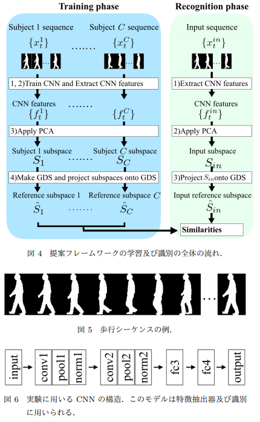
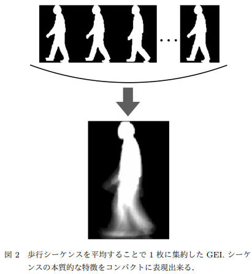
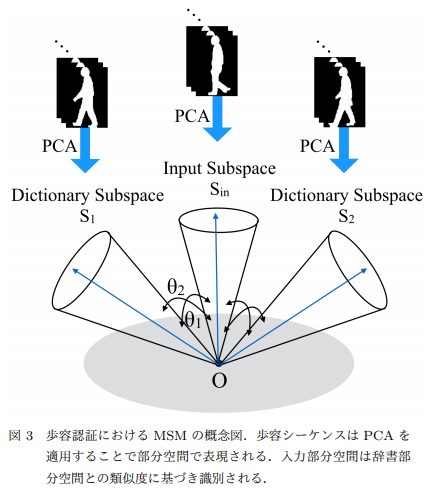
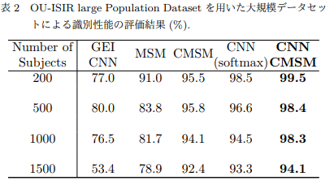

Gait Recognition Based on Constraint Mutual Subspace Method with CNN Features
論文情報
- Gait Recognition Based on Constraint Mutual Subspace Method with CNN Features
- Akinari Sakai, Naoya Sogi, Kazuhiro Fukui
- CV lab, University of Tsukuba
- PRMU BioX
- all
- https://www.ieice.org/ken/paper/2019031831KJ/
目次
要旨 Abstract
論文のアブストラクトを日本語で軽く
歩行認証は、カメラから離れた場所からでも動作を測定可能であるため、認識対象の協力を必要とせず識別を実行できる。 そのため、歩容認証に基づくシステムは、街中の監視や犯罪捜査など実問題に対して有効に機能することが期待されている。
従来の歩容認証手法の多くは、歩行シーケンスを集約したGEIと呼ばれる特徴量を利用している。 これに対し、相互部分空間法（MSM）に基づく手法では、歩行シーケンスの構造情報をコンパクトかつ高精度に表現可能であることが知られている。
本論文では、MSMに基づく手法を強化するために、次の２つの機能を導入する。
- 一般化差分部分空間（GDS）への射影によるクラス部分空間の準直交化
- 畳み込みニューラルネットワーク（CNN)を用いた各入力画像からの特徴抽出
GDSへの射影を導入した手法は、制約相互部分空間法（CMSM）と呼ばれ、画像セットに基づく識別に有効な手法として広く知られている。
提案手法は、大規模部公開データベースであるOU-ISIR Large Population Databaseを用いた1000人規模の評価実験において、98.%の精度を示した。
リサーチ課題
歩容認証のフレームワークとしてGEIなどの手法があるが、GEIは時間変化による動きの方向や大きさのより細密構造情報を取り込むことが困難である。
もっと良い歩用認証のフレームワークはないのか。
リサーチ課題に対する結論
相互部分空間法（MSM）に基づく手法が有効であった。
手法
まずは一言で
畳み込みニューラルネットワーク（CNN）によるを用いた制約部分空間法（CMSM）
手法の具体的な説明 
従来のアプローチとはどのように異なるか
- Gait energy image
Gait Energy Image(GEI) は，1 つの歩行シーケンスを集約することで得られる特徴量である。 シーケンスを平均化して集約することで，各フレームに含まれるノイズを抑制している。
しかし，このようなシーケンスの集約は，フレーム間の変化の方向及び大きさまでは捉えられない．つまり，GEI はシーケンスの構造を圧縮しすぎるために，高精度な識別のために重要な構造情報までを損失してしまっている。 
- 相互部分空間（MSM）
MSMは画像セットに基づく識別手法であり、歩行シルエットシーケンス全体の構造を部分空間によってコンパクトに表現する。 比較は、部分空間同士の類似度（正準角）を計算することで求まる。 
結果
OU-ISIR Large Population Databaseを用いた1000人規模の評価実験において、98.%の精度を示した。 
コメント
問題点や議論できることがあれば
スポーツの画像認識タスクにおいて、選手間の識別というものが一つの問題となっている。 そのため、本文のように大規模人数の歩容認識手法は大きく役立つことが期待される。
その他
リサーチクエスチョンに関する論文
手法に関する論文